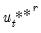
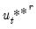
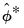
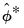

To formalize matters, consider a system of time series of length T. If the system is modelled as a vector autoregression (VAR) process of order
p, the data generating process (DGP) for the system is written as:
Next suppose that the object of interest (e.g., estimator, test statistic, etc.) is the functional:
The distribution of  may be approximated by generating a large number, say B
may be approximated by generating a large number, say B, of different outcome paths ( for

) for the “*” is used to indicate that the object is derived from simulation. In particular, the
B outcomes

are obtained by simulating from the DGP in
Equation (44.38) to generate
B independent outcomes

of

and for each such draw, compute the corresponding

using
Equation (44.39) but with the generated data. The distribution of the

is then estimated as the empirical distribution of the set of simulated outcomes .
A commonly used method of generating data from Equation (44.38) is the
residual based bootstrap. The procedure is straightforward:
In this case, for each  , the distribution is approximated by generating a large number, say R
, the distribution is approximated by generating a large number, say R, of different outcome paths ( for ), where the superscript “**” indicates that the object is derived from a second stage bootstrap simulation.
In particular, the R outcomes

are obtained by simulating, from the bootstrap DGP, using a bootstrap draw of
b and
Equation (44.40) and generating new
R outcomes

and then for each of those outcomes, a corresponding

. The distribution of the

is then estimated as the empirical distribution of the set of simulated outcomes .
Performing a full double bootstrap algorithm is extremely computationally demanding. A single bootstrap algorithm typically requires the computation of test statistics —a single statistic performed on the original data and an additional B statistics obtained in the bootstrap loop. On the other hand, a full double bootstrap requires statistics, with the additional BR statistics computed in the inner loop of the double bootstrap algorithm. For instance, setting and , the double bootstrap will require the computation of no less than 499,501 test statistics. In this regard, several attempts have been proposed to circumvent this computational burden, among the most popular of which is the fast double bootstrap (FDB) algorithm of Davidson and MacKinnon (2002) and general iterated variants proposed in Davidson and Trokic (2020). The principle governing the success of these algorithms relies on setting

. For instance, the FDB has proved particularly useful in approximating full double bootstrap algorithms with roughly less than the twice the computational burden of the traditional bootstrap: to be precise.
Note that can be obtained from the empirical variance of the B bootstrap estimates and that , may be estimated from the empirical variance of the
R double bootstrap estimates

.


and the specification Equation (44.38), obtain estimates of the coefficients and the corresponding the residual series
.

and the specification Equation (44.38), obtain estimates of the coefficients
and the corresponding the residual series .
, , and
denote, respectively, some general impulse response coefficient, its estimator derived using the original data
and the DGP in Equation (44.38), and the associated bootstrap estimator derived using a procedure like the residual based bootstrap “Residual Based Bootstrap”.
 and are
and are  -element vectors, are
-element vectors, are  matrices, and where is a
matrices, and where is a  covariance matrix.
covariance matrix. .
. :
: .
. as follows:
as follows: , estimate coefficients to obtain .
, estimate coefficients to obtain . , typically denoted as is obtained as the average of the individual bootstrap estimates . In other words
, typically denoted as is obtained as the average of the individual bootstrap estimates . In other words -th bootstrap estimate
-th bootstrap estimate  . This distribution is typically needed in deriving the variance of a bootstrap statistics.
. This distribution is typically needed in deriving the variance of a bootstrap statistics. , where .
, where . :
: from the , generate bootstrap data , estimate
from the , generate bootstrap data , estimate  , and obtain the first stage bootstrap estimate
, and obtain the first stage bootstrap estimate  .
. perform a residual bootstrap: draw bootstrap residuals  from the , generate bootstrap data , estimate , and obtain a second stage bootstrap estimate
perform a residual bootstrap: draw bootstrap residuals  from the , generate bootstrap data , estimate , and obtain a second stage bootstrap estimate represent an impulse response coefficient that depends on the data. In terms of the discussion above we may think of
represent an impulse response coefficient that depends on the data. In terms of the discussion above we may think of  and contemplate obtaining bootstrap measures of the precision of
and contemplate obtaining bootstrap measures of the precision of  .
. are the
are the  and
and  quantiles of the empirical distribution of , respectively.
quantiles of the empirical distribution of , respectively. is asymptotically approximated by the distribution of
is asymptotically approximated by the distribution of  . Accordingly, the Hall bootstrap CI is given by
. Accordingly, the Hall bootstrap CI is given by and are the and
and are the and  quantiles of the empirical distribution of the bootstrap draws
quantiles of the empirical distribution of the bootstrap draws ,
, and
and  quantiles of the empirical distribution of , where
quantiles of the empirical distribution of , where and empirical quantiles of the bias corrected bootstrap impulse responses.
and empirical quantiles of the bias corrected bootstrap impulse responses. ) has an equivalent representation as a VEC(
) has an equivalent representation as a VEC( ) process, one can simply convert bootstrap VAR estimates into their VEC equivalents, and proceed analogously to derive the VEC impulse responses using the latter coefficients. Alternatively, one can start from a VEC representation, obtain bootstrap coefficient estimates, and then integrate the VEC model to its VAR equivalent. The converted bootstrap coefficient estimates can then be used to derive bootstrap CIs for the corresponding VAR.
) process, one can simply convert bootstrap VAR estimates into their VEC equivalents, and proceed analogously to derive the VEC impulse responses using the latter coefficients. Alternatively, one can start from a VEC representation, obtain bootstrap coefficient estimates, and then integrate the VEC model to its VAR equivalent. The converted bootstrap coefficient estimates can then be used to derive bootstrap CIs for the corresponding VAR.